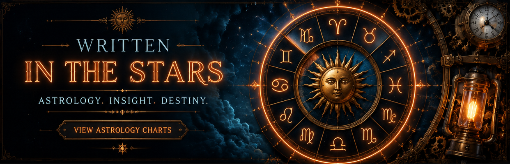

Star Chart Page
Pole Shift Navigation Chart (experimental)
Ever wonder what the night sky would look like if the geographic pole was in a different position?
Pole Shift Star Chart
Western Astrology Chart
Western astrology chart that calculates planets, major fixed stars, aspects, retrogrades, and moon phases in browser in real time, with expanded interpretive readings for active alignments.
Western Astrology Chart
Eastern Astrology Chart
Eastern astrology chart with Chinese calendrical pillars, zodiac animals, elements, yin-yang polarity, hidden stems, and Vedic-style sidereal planetary/lunar indicators including nakshatra, pada, tithi, and paksha.
Eastern Astrology Chart